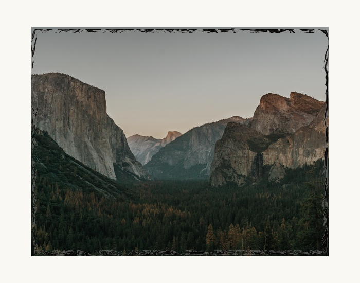
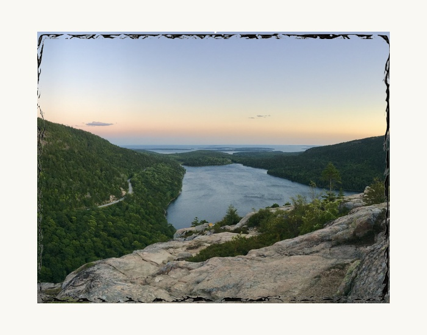
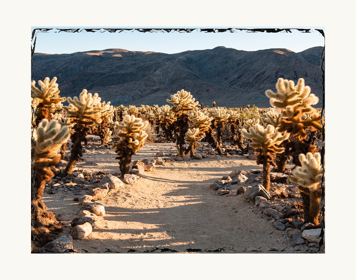
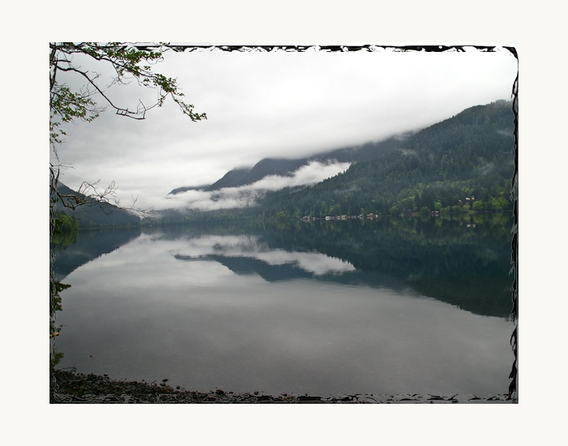
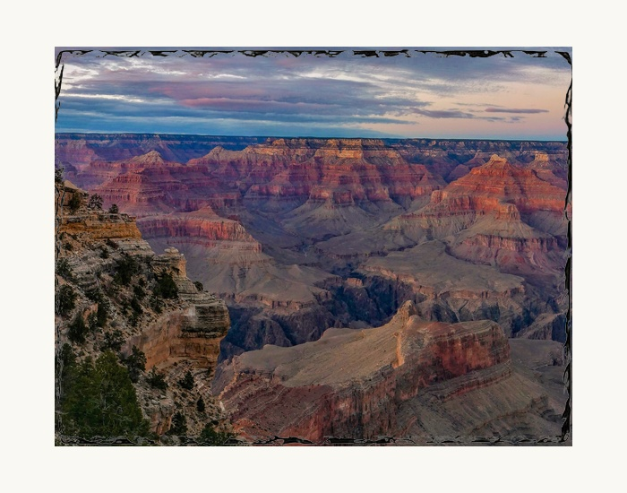
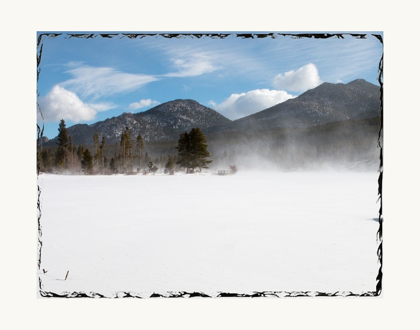
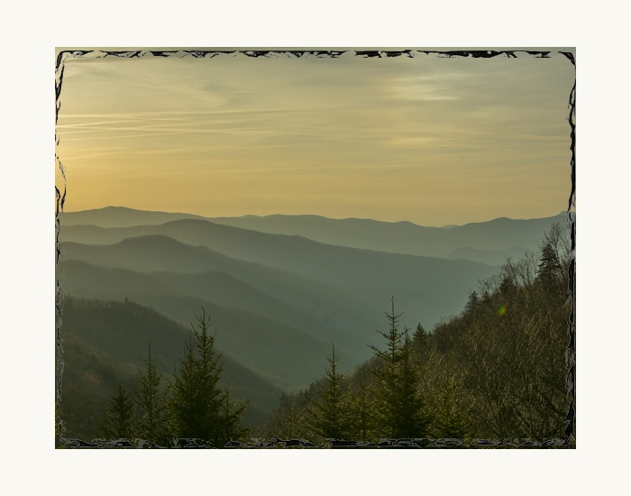
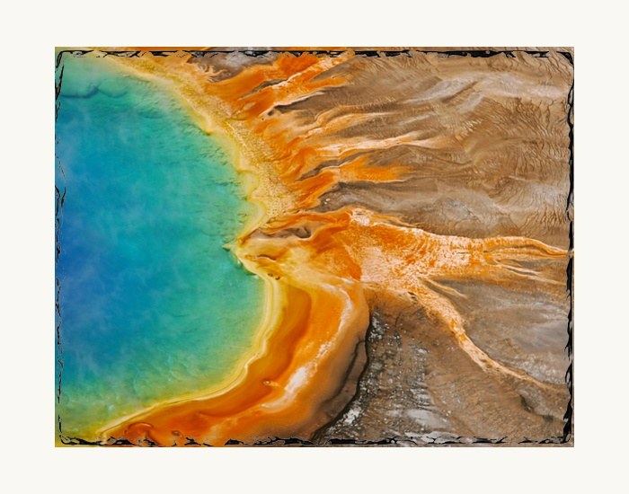
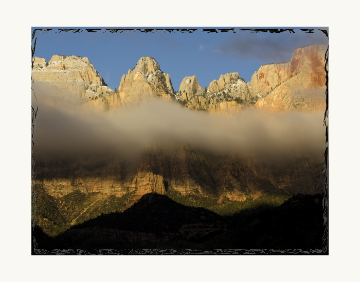
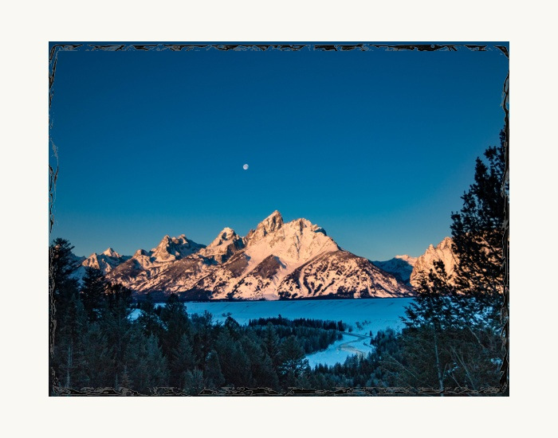

Photo shown on the actual slate surface · Digital preview YOUR PHOTO. A REAL KEEPSAKE.
Set your
memory
in stone.
Your photo, printed directly on natural slate.
Ready for a desk, shelf, or someone special.
From $29.99 · Display supports included
Choose a size. Make it yours. Finish in store. 02 Your photo slate
02 Your photo slateA PHOTO YOU CAN HOLD.
Made to be
out in the open.
- 1 Size
- 2 Store
- 3 Your photo
- 4 Review
Choose your size.
Map unavailable. You can still choose any store from the list.
Three local stores. Choose the one that works for you.

Sample photo · Your photo will replace this.
Yosemite Valley
El Capitan frames the valley in this landscape photograph from Tunnel View.
8 × 10 inch photo slate · $49.99
Display supports included.

Digital preview on the supplier’s slate. Photograph by Levi Bare.
National park photo slates
8 × 10 inches · $49.99 each · Landscape with display supports. Digital previews on the supplier’s slate.

Cropped for slate · National Park Service
Acadia
Jordan Pond at Sunset

Cropped for slate · NPS / Carmen Aurrecoechea
Joshua Tree
Cholla Garden at Sunset

Cropped for slate · Niagara66 · Photo crop licensed under CC BY-SA 4.0
Olympic
Lake Crescent Reflections

Cropped for slate · Grand Canyon National Park · CC BY 2.0
Grand Canyon
Powell Point Sunset

Cropped for slate · NPS / M. Reed
Rocky Mountain
Sprague Lake

Cropped for slate · Thom McManus
Great Smoky Mountains
Oconaluftee Sunrise

Cropped for slate · NPS / Jim Peaco
Yellowstone
Grand Prismatic Spring

Cropped for slate · NPS / Sierra Coon · CC BY 2.0
Zion
Towers of the Virgin

Cropped for slate · NPS / Tobiason
Grand Teton
Snake River Overlook
SHOW THIS TO OUR TEAM
Your slate is picked.
- Pick code
- Slate
- Orientation
- Name / date
Bring your original photo. Our team will confirm your crop, stock, and pickup timing.
Made and paid for in store. This screen is your selection, not an order.
Clears after 5 minutes without a touch.
From $29.99Display supports included
.jpg){kind=link}